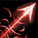

TOP 티어 원딜
시비르
- Passive Skill
- Q Skill
- W Skill
- E Skill
- R Skill
사미라
- Passive Skill
- Q Skill
- W Skill
- E Skill
- R Skill
 재빠른 발놀림:시비르가 기본 공격이나 스킬로 적 챔피언을 공격하면
1.5초에 걸쳐 감소하는 이동 속도를 얻습니다.
재빠른 발놀림:시비르가 기본 공격이나 스킬로 적 챔피언을 공격하면
1.5초에 걸쳐 감소하는 이동 속도를 얻습니다.
 부메랑
검:시비르가 십자날 검을 던져서 관통하는 모든 적 챔피언에게 물리
피해를 입히고 돌아오며 두 번째 피해를 입힙니다. 이 스킬은 챔피언이
아닌 대상에게 적중할 때마다 피해량이 15%씩 감소하며 최소 40%까지
내려갈 수 있습니다.
부메랑
검:시비르가 십자날 검을 던져서 관통하는 모든 적 챔피언에게 물리
피해를 입히고 돌아오며 두 번째 피해를 입힙니다. 이 스킬은 챔피언이
아닌 대상에게 적중할 때마다 피해량이 15%씩 감소하며 최소 40%까지
내려갈 수 있습니다.
 튕기는
부메랑:4초 동안 시비르가 공격 속도를 획득하고 기본 공격이 강화되어
주위 적들에게 튕겨 감소된 물리 피해를 입힙니다. 공격은 최대 8회
튕깁니다. 공격이 치명타라면 튕긴 공격도 치명타를 가합니다.
튕기는
부메랑:4초 동안 시비르가 공격 속도를 획득하고 기본 공격이 강화되어
주위 적들에게 튕겨 감소된 물리 피해를 입힙니다. 공격은 최대 8회
튕깁니다. 공격이 치명타라면 튕긴 공격도 치명타를 가합니다.
주문
방어막:시비르가 1.5초간 주문 방어막을 만들어 적의 스킬을 막아냅니다.
적의 스킬을 방어하는 데 성공하면 시비르가 체력을 회복하고 재빠른
발놀림을 발동합니다.
 사냥
개시:시비르가 주위 아군을 이끌며 8 / 10 / 12초 동안 이동 속도를
상승시킵니다. 사냥 개시 활성화 중 챔피언에게 기본 공격을 가하면
시비르의 기본 스킬 재사용 대기시간을 공격당 0.5초 감소합니다. 최근
피해를 입힌 적 처치에 관여하면 사냥 개시의 지속 시간이
초기화됩니다.
사냥
개시:시비르가 주위 아군을 이끌며 8 / 10 / 12초 동안 이동 속도를
상승시킵니다. 사냥 개시 활성화 중 챔피언에게 기본 공격을 가하면
시비르의 기본 스킬 재사용 대기시간을 공격당 0.5초 감소합니다. 최근
피해를 입힌 적 처치에 관여하면 사냥 개시의 지속 시간이
초기화됩니다.
무모한 충동:사미라가 마지막으로 맞힌 공격과 다른 기본 공격 또는
스킬로 적 챔피언에게 피해를 입히면 콤보를 1회 쌓습니다. 각 콤보마다
"E"부터 "S"까지 총 6단계의 스타일 등급이 올라갑니다. 등급마다 3.5%의
이동 속도를 얻습니다. 사미라가 근접 공격 사거리 내에 있는 적에게
스킬을 사용하거나 기본 공격을 가하면 추가 마법 피해를 입힙니다.
피해량은 대상이 잃은 체력에 비례하여 2배까지 증가합니다. 사미라가
이동 불가 효과에 영향을 받은 적에게 기본 공격을 가하면 최대
사거리까지 돌진합니다. 해당 적이 공중으로 띄워진 상태라면 사미라도
최소 0.5초간 롤아이콘-군중제어 에어본공중으로 띄워 올립니다.
사미라의 돌진 사거리는 레벨에 따라 증가합니다.
 천부적
재능:사미라가 총을 쏴 처음 맞은 적에게 물리 피해를 입힙니다. 근접
공격 사거리 내에 있는 적에게 이 스킬을 사용하면, 사미라가 검으로
베어 물리 피해를 입힙니다.
천부적
재능:사미라가 총을 쏴 처음 맞은 적에게 물리 피해를 입힙니다. 근접
공격 사거리 내에 있는 적에게 이 스킬을 사용하면, 사미라가 검으로
베어 물리 피해를 입힙니다.
원형
검무:사미라가 0.75초 동안 주변에 검을 휘두르며 적들을 두 번 공격해
각각 물리 피해를 입히고 범위 안으로 들어오는 적의 투사체를 모두
파괴합니다.
거침없는
질주:사미라가 적(포탑 포함)을 통과해 돌진합니다. 돌진 도중 통과하는
모든 적을 베어 마법 피해를 입히고, 3초 동안 공격 속도를 얻습니다.
사미라가 피해를 입힌 적 챔피언이 3초 안에 처치되면 거침없는 질주의
재사용 대기시간이 초기화됩니다.
지옥불
난사:사미라의 스타일 등급이 S등급일 때만 이 스킬을 사용할 수
있습니다. 사미라가 무기를 난사해 2초 동안 10회에 걸쳐 주변의 모든
적에게 롤아이콘-정신집중공격을 퍼붓습니다. 각 사격은 물리 피해를
입히며 66.6%의 생명력 흡수가 적용됩니다. 또한 치명타가 적용될 수
있습니다.
2티어 원딜
진
- Passive Skill
- Q Skill
- W Skill
- E Skill
- R Skill
이즈리얼
- Passive Skill
- Q Skill
- W Skill
- E Skill
- R Skill
루시안
- Passive Skill
- Q Skill
- W Skill
- E Skill
- R Skill
속삭임:진이 사용하는 총은 공격 속도가 고정되어 있으며 4발을 발사한
후엔 재장전해야 합니다. 4번째 총탄은 언제나 치명타가 발동되며,
대상이 잃은 체력만큼 추가 물리 피해를 입힙니다. 추가 효과: - 진이
추가 공격력을 얻습니다. - 진의 치명타 피해량이 14% 감소하지만, 2초
동안 이동 속도가 10% (+0.4 추가 공격 속도) 증가합니다. 공격력은
치명타 확률과 추가 공격 속도에 비례합니다. 이동 속도는 추가 공격
속도에 비례합니다.
 춤추는 유탄:진이 폭탄을 던져 물리 피해를 입힌 후 아직 폭탄에 맞지
않은 근처의 적에게 튕깁니다. 폭탄은 최대 4번까지 적을 맞힐 수
있으며, 폭탄으로 적을 처치할 때마다 그 다음 타격의 피해량이 35%씩
늘어납니다.
춤추는 유탄:진이 폭탄을 던져 물리 피해를 입힌 후 아직 폭탄에 맞지
않은 근처의 적에게 튕깁니다. 폭탄은 최대 4번까지 적을 맞힐 수
있으며, 폭탄으로 적을 처치할 때마다 그 다음 타격의 피해량이 35%씩
늘어납니다.
 살상연희:진이 원거리 공격을 가하여 처음 적중한 챔피언에게 물리
피해를 입히고 경로상에 있는 다른 모든 적에게 75%의 피해를 입힙니다.
이 스킬로 아군 챔피언에게 공격당한 챔피언을 4초 안에 공격했다면
대상을 일정 시간 동안 롤아이콘-군중제어 속박속박하고 속삭임의 이동
속도가 증가합니다.
살상연희:진이 원거리 공격을 가하여 처음 적중한 챔피언에게 물리
피해를 입히고 경로상에 있는 다른 모든 적에게 75%의 피해를 입힙니다.
이 스킬로 아군 챔피언에게 공격당한 챔피언을 4초 안에 공격했다면
대상을 일정 시간 동안 롤아이콘-군중제어 속박속박하고 속삭임의 이동
속도가 증가합니다.
 강제 관람:기본 지속 효과: 진이 적 챔피언을 처치하면 해당 위치에
연꽃 함정이 설치되어 폭발합니다. 사용 시: 진이 3분 동안 유지되는
보이지 않는 연꽃 함정을 설치합니다. 함정을 밟은 적은 35% 둔화됩니다.
함정은 2초 후 폭발하여 마법 피해를 입힙니다. 이 스킬은 2회까지
충전됩니다.
강제 관람:기본 지속 효과: 진이 적 챔피언을 처치하면 해당 위치에
연꽃 함정이 설치되어 폭발합니다. 사용 시: 진이 3분 동안 유지되는
보이지 않는 연꽃 함정을 설치합니다. 함정을 밟은 적은 35% 둔화됩니다.
함정은 2초 후 폭발하여 마법 피해를 입힙니다. 이 스킬은 2회까지
충전됩니다.
커튼 콜:진이 자세를 잡고 롤아이콘-정신집중정신을 집중해 4발의
강력한 탄환을 발사합니다.각 탄환은 처음 적중한 챔피언에게 대상이
잃은 체력에 비례해 물리 피해를 입히고[35] 0.5초 동안 80%
둔화시킵니다.4번째 총탄은 치명타가 발동되며 200%만큼 피해를
입힙니다.
 끓어오르는 주문의 힘:이즈리얼이 스킬을 적중시키면 6초 동안 공격
속도가 10% 증가합니다. 이 효과는 최대 5번 중첩됩니다.
끓어오르는 주문의 힘:이즈리얼이 스킬을 적중시키면 6초 동안 공격
속도가 10% 증가합니다. 이 효과는 최대 5번 중첩됩니다.
신비한
화살:이즈리얼이 에너지 화살을 발사하여 처음 적중한 적에게 물리
피해를 입히고, 이즈리얼의 스킬 재사용 대기시간을 1.5초 감소시킵니다
 정수의
흐름:이즈리얼이 마법의 구체를 발사해 처음으로 적중한 챔피언이나
구조물, 에픽 정글 몬스터에게 4초 동안 남아 있게 합니다. 이즈리얼이
해당 대상에게 기본 공격이나 스킬을 적중시키면 구체가 폭발하며 마법
피해를 입힙니다. 스킬로 구체를 폭발시키면 해당 스킬로 소모한
마나+60의 마나를 돌려받습니다.
정수의
흐름:이즈리얼이 마법의 구체를 발사해 처음으로 적중한 챔피언이나
구조물, 에픽 정글 몬스터에게 4초 동안 남아 있게 합니다. 이즈리얼이
해당 대상에게 기본 공격이나 스킬을 적중시키면 구체가 폭발하며 마법
피해를 입힙니다. 스킬로 구체를 폭발시키면 해당 스킬로 소모한
마나+60의 마나를 돌려받습니다.
비전
이동:이즈리얼이 순간이동 후 가장 가까이에 있는 적에게 화살을
발사하여 마법 피해를 입힙니다. 화살은 정수의 흐름에 영향을 받은
대상을 우선적으로 공격합니다.
 정조준
일격:이즈리얼이 거대한 에너지파를 발사하여 마법 피해를 입힙니다.
에픽 몬스터를 제외한 미니언과 정글 몬스터에게는 50%의 피해를
입힙니다.
정조준
일격:이즈리얼이 거대한 에너지파를 발사하여 마법 피해를 입힙니다.
에픽 몬스터를 제외한 미니언과 정글 몬스터에게는 50%의 피해를
입힙니다.
빛의
사수:루시안은 스킬을 사용한 후 기본 공격을 하면 총을 두 번 연속
발사합니다. 두 번째 공격은 적 챔피언과 구조물에 공격력의 일정 비율의
피해를 입히고 미니언과 정글 몬스터에게는 100%의 물리 피해를
입힙니다. 경계: 아군이 루시안에게 이로운 효과를 주면 다음 2회의 기본
공격이 추가 마법 피해를 입힙니다. 경계로 강화된 기본 공격은 최대
4회까지 충전할 수 있습니다. 3.5초 내에 공격하지 않으면 효과가
사라집니다.
 꿰뚫는
빛:루시안이 대상을 관통하는 빛 줄기를 발사해 물리 피해를
입힙니다.
꿰뚫는
빛:루시안이 대상을 관통하는 빛 줄기를 발사해 물리 피해를
입힙니다.
 타는
불길:루시안이 사거리 끝에 도달하거나 적을 맞히면 폭발하는 탄환을
발사합니다. 폭발에 맞은 적은 마법 피해를 입고 잠시 위치가 드러나며,
6초 동안 표식이 남습니다.[18] 루시안이나 아군이 표식이 남은 적을
공격하면 1초 동안 루시안의 이동 속도가 상승합니다.[19] 아군이 이
효과를 발동시키면 루시안이 경계 효과도 얻습니다.
타는
불길:루시안이 사거리 끝에 도달하거나 적을 맞히면 폭발하는 탄환을
발사합니다. 폭발에 맞은 적은 마법 피해를 입고 잠시 위치가 드러나며,
6초 동안 표식이 남습니다.[18] 루시안이나 아군이 표식이 남은 적을
공격하면 1초 동안 루시안의 이동 속도가 상승합니다.[19] 아군이 이
효과를 발동시키면 루시안이 경계 효과도 얻습니다.
 끈질긴
추격:루시안이 돌진합니다. 빛의 사수로 적을 맞힐 때마다 재사용
대기시간이 1초씩 감소합니다. (챔피언인 경우 2초 감소)
끈질긴
추격:루시안이 돌진합니다. 빛의 사수로 적을 맞힐 때마다 재사용
대기시간이 1초씩 감소합니다. (챔피언인 경우 2초 감소)
 빛의
심판:루시안이 3초 동안 한 방향으로 총을 난사해 처음 적중한 적에게
각각 물리 피해를 입힙니다. 스킬을 재사용하면 난사를 중단합니다. 총을
난사하는 도중에 끈질긴 추격을 사용할 수 있습니다.
빛의
심판:루시안이 3초 동안 한 방향으로 총을 난사해 처음 적중한 적에게
각각 물리 피해를 입힙니다. 스킬을 재사용하면 난사를 중단합니다. 총을
난사하는 도중에 끈질긴 추격을 사용할 수 있습니다.
3티어 원딜
바루스
- Passive Skill
- Q Skill
- W Skill
- E Skill
- R Skill
미스 포츈
- Passive Skill
- Q Skill
- W Skill
- E Skill
- R Skill
칼리스타
- Passive Skill
- Q Skill
- W Skill
- E Skill
- R Skill
카이사
- Passive Skill
- Q Skill
- W Skill
- E Skill
- R Skill
애쉬
- Passive Skill
- Q Skill
- W Skill
- E Skill
- R Skill
죽지 않는 복수심:바루스가 적을 처치하면 공격 속도가 상승합니다.
챔피언 처치 관여 시 공격 속도가 2배 상승합니다.
 꿰뚫는
화살:충전 시작 시: 바루스가 다음 화살을 조준하며 20% 둔화됩니다.
4초가 경과한 후 쏘지 않으면 바루스가 스킬을 취소하고 소모한 마나의
50%를 돌려받습니다. 발사 시: 바루스가 화살을 발사하여 물리 피해를
입힙니다. 관통당한 적 하나당 15%씩 피해량이 감소합니다. (최소 33%)
피해량과 역병 폭발 효과는 충전 시간에 비례해 최대 50%까지
증가합니다.
꿰뚫는
화살:충전 시작 시: 바루스가 다음 화살을 조준하며 20% 둔화됩니다.
4초가 경과한 후 쏘지 않으면 바루스가 스킬을 취소하고 소모한 마나의
50%를 돌려받습니다. 발사 시: 바루스가 화살을 발사하여 물리 피해를
입힙니다. 관통당한 적 하나당 15%씩 피해량이 감소합니다. (최소 33%)
피해량과 역병 폭발 효과는 충전 시간에 비례해 최대 50%까지
증가합니다.
역병 화살
기본 지속 효과: 바루스의 기본 공격이 마법
피해를 입히고 6초 동안 역병을 적용합니다.(최대 3회 중첩) 바루스가
다른 스킬을 사용해 역병 중첩을 폭발시키면 중첩 횟수당 최대 체력에
비례한 마법 피해를 입힙니다. 챔피언과 에픽 몬스터를 대상으로 역병을
폭발시키면 기본 스킬의 재사용 대기시간이 중첩 횟수당 최대 재사용
대기시간의 12%만큼 감소합니다. 역병 폭발로 인한 기본 지속 효과
피해량은 정글 몬스터에게 최대 360의 피해를 입힙니다.
사용 시: 다음 꿰뚫는 화살 스킬이 잃은 체력에 해당하는 마법 피해를 추가로
입힙니다. 피해량은 충전 시간에 비례하여 50%까지 증가합니다.
 퍼붓는
화살:바루스가 화살을 비처럼 쏟아부어 물리 피해를 입히고 4초 동안
지면을 오염시켜 적을 둔화시키며 25%의 고통스러운 상처를
적용합니다.
퍼붓는
화살:바루스가 화살을 비처럼 쏟아부어 물리 피해를 입히고 4초 동안
지면을 오염시켜 적을 둔화시키며 25%의 고통스러운 상처를
적용합니다.
 부패의
사슬:바루스가 부패의 촉수를 발사해 처음 맞은 챔피언을 2초 동안
롤아이콘-군중제어 속박속박하고 마법 피해를 입힙니다.
롤아이콘-군중제어 속박속박된 적은 지속 시간에 걸쳐 역병 중첩이 3회
쌓입니다.[18] 촉수는 대상으로부터 감염되지 않은 적 챔피언에게 뻗어
나가, 닿은 적에게 동일한 양의 피해를 입히고 롤아이콘-군중제어
속박속박합니다.
부패의
사슬:바루스가 부패의 촉수를 발사해 처음 맞은 챔피언을 2초 동안
롤아이콘-군중제어 속박속박하고 마법 피해를 입힙니다.
롤아이콘-군중제어 속박속박된 적은 지속 시간에 걸쳐 역병 중첩이 3회
쌓입니다.[18] 촉수는 대상으로부터 감염되지 않은 적 챔피언에게 뻗어
나가, 닿은 적에게 동일한 양의 피해를 입히고 롤아이콘-군중제어
속박속박합니다.
 사랑의 한 방:미스 포츈이 새로운 대상에게 기본 공격을 가하면 물리
피해를 추가로 입힙니다.
사랑의 한 방:미스 포츈이 새로운 대상에게 기본 공격을 가하면 물리
피해를 추가로 입힙니다.
한 발에
두놈:미스 포츈이 튕기는 총알을 발사하여 적 하나와 그 뒤에 있는 다른
적에게 각각 물리 피해를 입힙니다. 두 번째 대상에게는 치명타를 입힐
수 있으며, 첫 번째 대상을 처치했을 경우 두 번째 대상에게는 항상
치명타가 적용됩니다.
활보:기본
지속 효과: 5초간 피해를 받지 않으면 미스 포츈의 이동 속도가 25
증가합니다. 다음 5초간 피해를 입지 않으면 이동 속도가 최대치까지
증가합니다. 사용 시: 이동 속도 증가 효과를 최대로 얻고 4초 동안 공격
속도가 상승합니다.
총알은
비를 타고:미스 포츈이 지정 지역에 총알을 퍼부어 시야를 밝히고 2초간
마법 피해를 입힙니다. 총알에 맞은 적은 둔화됩니다.
 쌍권총
난사:미스 포츈이 3초 동안 정신 집중 상태로 총을 난사해 공격 한
차례에 물리 피해를 입힙니다. 이 스킬은 매회 발사 시 각각 120%의
치명타 피해를 입힐 수 있습니다.
쌍권총
난사:미스 포츈이 3초 동안 정신 집중 상태로 총을 난사해 공격 한
차례에 물리 피해를 입힙니다. 이 스킬은 매회 발사 시 각각 120%의
치명타 피해를 입힐 수 있습니다.
 전투
태세:칼리스타가 공격 준비 동작을 하는 동안 이동 명령을 하면 창을
던진 후에 해당 방향으로 도약합니다. 기본 공격은 총 공격력의 90%에
해당하는 피해를 입힙니다.[10] 칼리스타는 칠흑의 창을 보유한 상태로
게임을 시작합니다. 아군 중 한 명에게 칠흑의 창을 사용해 게임이 끝날
때까지 지속되는 계약을 맺을 수 있습니다. 칼리스타의 기본 공격은
취소할 수 없으며, 대상이 시야에서 사라지면 피해를 입히지 못합니다.
도약 거리는 신발 업그레이드에 비례합니다.
전투
태세:칼리스타가 공격 준비 동작을 하는 동안 이동 명령을 하면 창을
던진 후에 해당 방향으로 도약합니다. 기본 공격은 총 공격력의 90%에
해당하는 피해를 입힙니다.[10] 칼리스타는 칠흑의 창을 보유한 상태로
게임을 시작합니다. 아군 중 한 명에게 칠흑의 창을 사용해 게임이 끝날
때까지 지속되는 계약을 맺을 수 있습니다. 칼리스타의 기본 공격은
취소할 수 없으며, 대상이 시야에서 사라지면 피해를 입히지 못합니다.
도약 거리는 신발 업그레이드에 비례합니다.
꿰뚫는
창:칼리스타가 창을 던져 처음 적중한 대상에게 물리 피해를 입힙니다.
대상을 처치하면 창이 계속 뻗어나가 다음으로 적중한 대상에게 뽑아
찢기의 중첩을 적용합니다. 칼리스타는 이 스킬을 사용한 후 전투 태세
효과로 도약할 수 있습니다.
감시하는
혼:기본 지속 효과: 칼리스타와 계약자가 같은 대상을 기본 공격하면
칼리스타가 대상의 최대 체력에 비례한 마법 피해를 입힙니다. 대상
하나당 재사용 대기시간은 10초입니다. 사용 시: 칼리스타가 혼을 하나
보내 지정 영역을 정찰하게 합니다.[15] 혼은 세 번 왕복하고 사라지며,
발각된 챔피언은 4초 동안 모습이 드러납니다. 충전 횟수는 2회이며 일정
시간마다 1회 충전됩니다.
 뽑아
찢기:기본 지속 효과: 칼리스타의 창은 대상의 몸에 4초 동안 유지되며
무제한으로 중첩됩니다.[18] 사용 시: 칼리스타가 근처 적에게 박힌 창을
뜯어내며 창의 수에 비례한 물리 피해를 입힙니다. 적중당한 적은 2초
동안 둔화됩니다. 이 스킬로 대상을 처치하면 재사용 대기시간이
초기화되고 마나를 돌려 받습니다.
뽑아
찢기:기본 지속 효과: 칼리스타의 창은 대상의 몸에 4초 동안 유지되며
무제한으로 중첩됩니다.[18] 사용 시: 칼리스타가 근처 적에게 박힌 창을
뜯어내며 창의 수에 비례한 물리 피해를 입힙니다. 적중당한 적은 2초
동안 둔화됩니다. 이 스킬로 대상을 처치하면 재사용 대기시간이
초기화되고 마나를 돌려 받습니다.
운명의
부름:칼리스타가 계약자를 옆으로 끌어와 최대 4초간 경직 상태로
만듭니다. 계약자는 마우스를 클릭하여 롤아이콘-저지불가 지정한 위치로
날아갈 수 있습니다. 챔피언과 부딪히면 멈추며, 주변 적들을
롤아이콘-군중제어 넉백뒤로 밀어냅니다. 계약자는 챔피언과 부딪히면
최대 공격 사거리만큼 밀려납니다.
두
번째 피부:부식성 흉터 - 카이사의 기본 공격이 4초 동안 플라즈마
중첩을 남기며 추가 마법 피해를 입힙니다. 4중첩에 도달하면 카이사가
공격했을 때 플라즈마가 폭발하며 대상이 잃은 체력에 비례한 추가 마법
피해를 입힙니다. (몬스터 대상 최대 피해량: 400) 아군의 이동 불가
효과가 적용된 적 챔피언에게도 플라즈마 1중첩이 쌓입니다. 살아있는
무기 - 카이사의 피부는 카이사의 공격 스타일에 적응해 아이템과 챔피언
레벨 업으로 얻는 영구 능력치를 기반으로 스킬을 진화시킵니다.
이케시아 폭우:카이사가 근처 적들을 추적하는 미사일을 6개 발사하며,
적중한 적에게 각각 물리 피해를 입힙니다. 이미 미사일에 맞은 적
챔피언 또는 몬스터에게 추가 적중할 경우 25%의 피해를 입힙니다.
체력이 35% 이하인 미니언은 200%의 피해를 입습니다.(진화 후)살아있는
무기 - 진화에 필요한 추가 공격력 100 - 이케시아 폭우가 미사일을 12개
발사합니다.
공허추적자:카이사가 공허 에너지 광선을 발사해 처음으로 적중한 적에
대한 절대 시야를 얻고[9] 광선에 적중된 대상은 플라즈마 중첩이 2회
쌓입니다. 대상은 중첩에 비례한 마법 피해를 입습니다.(진화
후)살아있는 무기 - 진화에 필요한 주문력 100 - 공허추적자가 플라즈마
중첩을 3만큼 적용하며 적 챔피언 적중 시 재사용 대기시간이 77%
감소합니다.
고속 충전:카이사가 1.2 ~ 0.6초[11] 동안 공허 에너지를 고속
충전합니다. 충전하는 동안 이동 속도가 증가하며, 충전을 마친 후 4초
동안 공격 속도가 증가합니다. 기본 공격 시 고속 충전의 재사용
대기시간이 0.5초씩 감소합니다. 공격 속도가 증가할수록 고속 충전의
충전 시간은 짧아지고 이동 속도 증가량은 높아집니다.(진화 후)살아있는
무기 - 진화에 필요한 공격 속도 100% - 고속 충전을 사용하면 0.5초
동안 투명 상태가 됩니다.
사냥
본능:카이사가 플라즈마 표식이 남은 적 챔피언 근처로 빠르게 돌진하며,
2초 동안 피해를 흡수하는 보호막을 얻습니다.
 서리
화살 :애쉬의 기본 공격과 스킬이 대상을 2초간 둔화 시킵니다. 이
스킬에 영향을 받은 적을 공격하면 추가 피해를 입힙니다. 애쉬의
치명타는 추가 피해를 가하지 않는 대신, 둔화 효과를 늘려 줍니다. 둔화
효과는 점차 원래대로 돌아옵니다.
서리
화살 :애쉬의 기본 공격과 스킬이 대상을 2초간 둔화 시킵니다. 이
스킬에 영향을 받은 적을 공격하면 추가 피해를 입힙니다. 애쉬의
치명타는 추가 피해를 가하지 않는 대신, 둔화 효과를 늘려 줍니다. 둔화
효과는 점차 원래대로 돌아옵니다.
 궁사의
집중 : 기본 지속 효과: 애쉬가 기본 공격 시 4초 동안 유지되는 중첩이
1회 쌓입니다. 4회 중첩 시 이 스킬을 사용할 수 있습니다. 사용 시: 4초
동안 애쉬의 공격 속도가 오르며 기본 공격이 강화된 피해를
입힙니다.
궁사의
집중 : 기본 지속 효과: 애쉬가 기본 공격 시 4초 동안 유지되는 중첩이
1회 쌓입니다. 4회 중첩 시 이 스킬을 사용할 수 있습니다. 사용 시: 4초
동안 애쉬의 공격 속도가 오르며 기본 공격이 강화된 피해를
입힙니다.
일제 사격
: 애쉬가 몇 개의 화살을 일제히 쏴 각각 물리 피해를 입힙니다. 적들은
일제 사격의 여러 화살에 맞을 수 있지만, 그중 첫 번째 화살에만 피해를
입습니다.
 매
날리기:애쉬가 매를 맵 어느 위치든 날려 보내 5초 동안 시야를
확보합니다. 매는 날아가는 동안 주변 지역을 드러냅니다. 이 스킬은
2회까지 충전됩니다.
매
날리기:애쉬가 매를 맵 어느 위치든 날려 보내 5초 동안 시야를
확보합니다. 매는 날아가는 동안 주변 지역을 드러냅니다. 이 스킬은
2회까지 충전됩니다.
 마법의
수정화살:애쉬가 얼음 수정화살을 발사하여 처음으로 맞힌 챔피언에게
마법 피해를 입히고 롤아이콘-군중제어 기절기절시킵니다.
롤아이콘-군중제어 기절기절 지속 시간은 화살이 날아가는 거리에
비례하여 3.5초까지 증가합니다. 주변의 적들도 절반의 피해를
입습니다.
마법의
수정화살:애쉬가 얼음 수정화살을 발사하여 처음으로 맞힌 챔피언에게
마법 피해를 입히고 롤아이콘-군중제어 기절기절시킵니다.
롤아이콘-군중제어 기절기절 지속 시간은 화살이 날아가는 거리에
비례하여 3.5초까지 증가합니다. 주변의 적들도 절반의 피해를
입습니다.